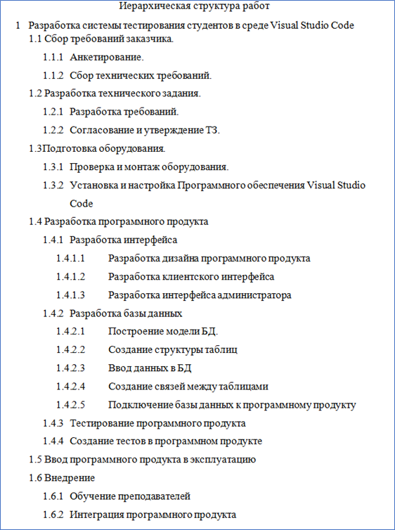
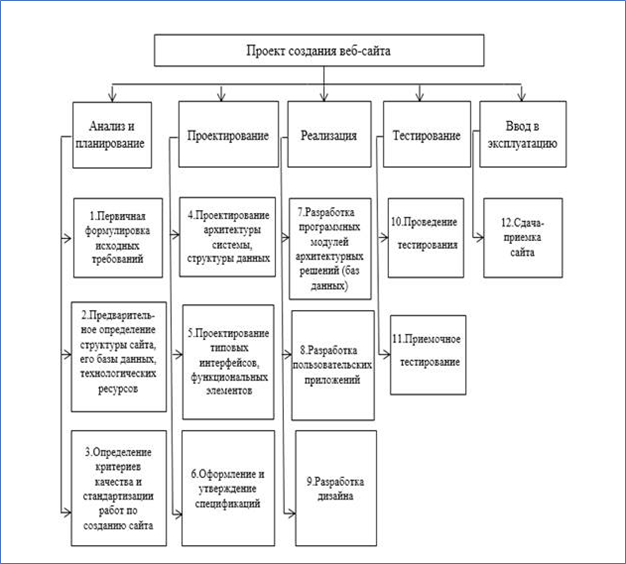

Иерархическая структура работ
Иерархическая структура работ (далее ИСР) — это разбиение вашего проекта на более мелкие и измеримые части. ИСР описывает все результаты/работы, которые должны быть получены/выполнены для завершения проекта.
Все, что не вошло в ИСР в рамки проекта не входит.
Часто ИСР представляют в виде диаграммы, где нижние уровни являются декомпозицией верхних.
Модель ИСР может быть выполнена графически, в виде древовидной структуры или в виде словесного описания.
Алгоритм разработки
-
Сбор исходной информации:
- требования заказчика;
- набор доступных ресурсов;
- конкретная проектная ситуация;
-
Определение степени детализации ИСР:
- Работа - основной элемент управления ИСР, дискретная задача, имеющая определимые конечные результаты.
- Пакет работ - сгруппированные работы.
Для определения степени детализации ИСР нужна следующая информация:
- количество уровней в ИСР;
- количество и средний размер пакета работ, принятых в отрасли.
ИСР не должна содержать более 3-5 уровней!

Рис. 1. ПРИМЕР ИСР словесного описания.

Рис 2. ПРИМЕР Древовидной ИСР.